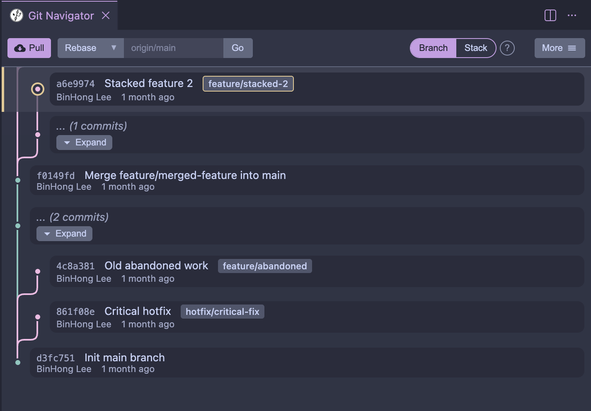

Visual comparisons
Drag-and-drop Rebase
Branch mode
On branch mode, you drag the tip of a branch to rebase the branch and it's parent commits onto the new location. (Git automatically calculates the merge base.)
Stack mode
On stack mode, you drag the base you want to rebase all of it's children and the entire descendant tree onto the new location. (All branch refs are updated with the rebase.)
Amend
Branch mode
Amending on branch mode creates a new branching commit
Stack mode
Amending on stack mode automatically rebases the rest of the stack onto the new change
Push
Branch mode
Pushing on branch mode pushes the selected branch to remote
Stack mode
Pushing on stack mode requires each commit on the stack to be a named branch before it can be pushed.
Cherrypick
Branch mode
Cherrypicking on branch mode cherrypicks the selected commit(s) to the target branch
Stack mode
Cherrypick is unsupported on stack mode
Graph View
Branch mode
Compact graph view

Stack mode

Full graph with stack highlights